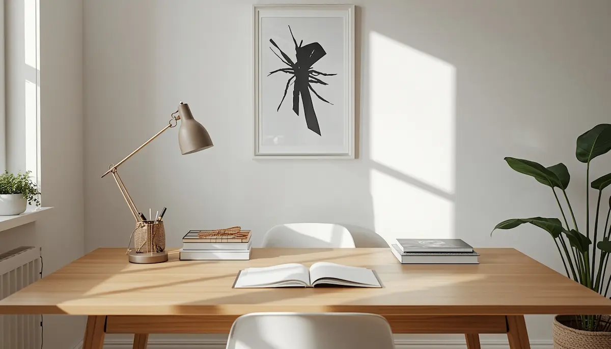
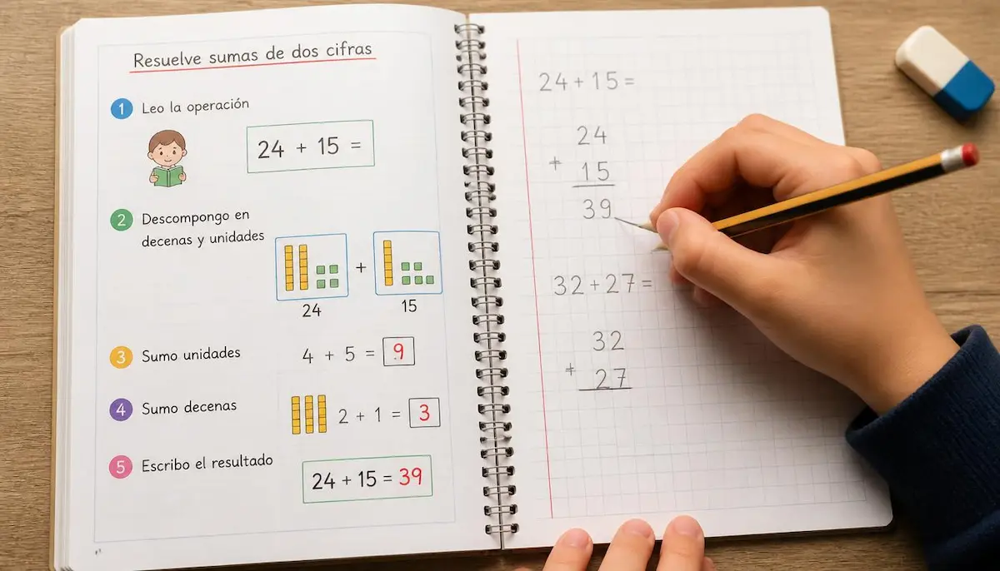

Comprender y acompañar: TDAH y pautas de apoyo
El Trastorno por Déficit de Atención e Hiperactividad (TDAH) es una condición neurobiológica que influye en cómo el cerebro procesa los estímulos, gestiona la atención, regula los impulsos y modula el nivel de actividad. Abordarlo en la infancia requiere mirar más allá de la etiqueta para entender el mundo desde su perspectiva. He reunido aquí una guía serena y práctica para disipar dudas, estructurar el día a día en casa y colaborar estrechamente con el colegio. Pincha en cada tarjeta para profundizar en cada tema.
Aceptar sin alarmas
El diagnóstico de TDAH no define el futuro del menor. Abordemos la noticia desde la serenidad, transformando el desconcierto inicial en una actitud de apoyo constructivo.
Descubrir más ➔¿Cómo funciona su mente?
Entender las funciones ejecutivas —atención, control de impulsos y memoria de trabajo— nos ayuda a comprender sus conductas cotidianas con empatía y claridad.
Descubrir más ➔Detectar las señales cotidianas
Reconocer la diferencia entre la vitalidad propia de la edad y los patrones del TDAH facilita una consulta temprana con el especialista para orientar el acompañamiento.
Descubrir más ➔
Adaptar el hogar y las rutinas
Crear espacios estructurados en casa, reducir estímulos distractores y establecer rutinas predecibles aporta la estabilidad que el niño necesita para su día a día.
Descubrir más ➔Alianzas firmes con la escuela
La comunicación constante con el profesorado y la aplicación de pautas metodológicas respetuosas aseguran un entorno de aprendizaje inclusivo y motivador.
Descubrir más ➔
Facilitar el aprendizaje sin fricciones
Fragmentar tareas largas en pequeños pasos, usar apoyos visuales y aplicar un refuerzo positivo constante ayuda a mantener la motivación durante los deberes.
Descubrir más ➔Gestionar la frustración y la calma
Acompañar las desregulaciones emocionales con paciencia y pautas claras previene crisis de impulsividad y transmite una profunda sensación de seguridad.
Descubrir más ➔Autonomía y autoestima sólida
Celebrar sus logros cotidianos, potenciar sus talentos naturales e impulsar su independencia construye una autopercepción firme, segura y positiva.
Descubrir más ➔